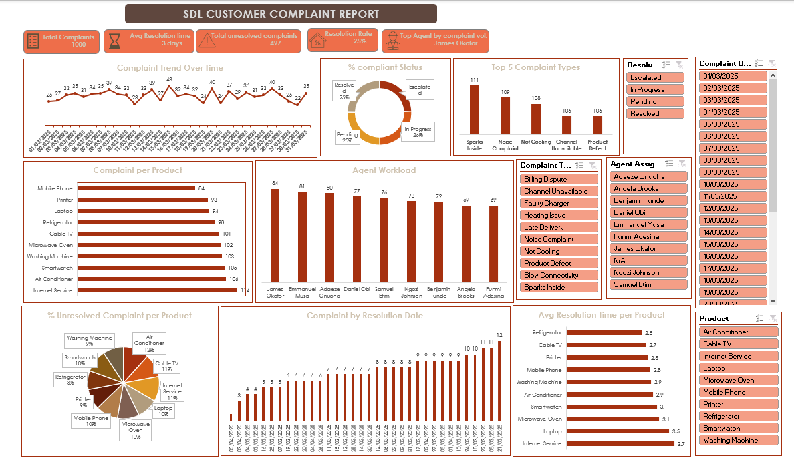

An end-to-end analysis of 1,000 customer complaint records — uncovering which products generate the most issues, how efficiently the support team resolves them, and where the process is breaking down.
The company was receiving a high volume of complaints across multiple products and services, but had no structured way to understand which products generated the most complaints, how long resolution actually took, which issues came up most often, or which agents were handling cases most effectively. Without that visibility, decision-makers had no data-backed basis for improving customer experience or operational efficiency.
Standardized inconsistent date formats, filled and flagged missing values, built new metrics using Excel formulas and functions, and formatted the dataset as a structured table ready for analysis.
Broke the dataset down by product, complaint type, agent, and resolution status to identify patterns in volume, speed, and bottlenecks.
Built an interactive dashboard and packaged the findings into a presentation covering the full story — from raw data to recommendations.

Of all complaints logged, just 25% reached "Resolved" status. The remainder was split fairly evenly across In Progress (26%), Pending (~25%), and Escalated (~24%) — meaning roughly three-quarters of complaints were still unresolved at the time of reporting.
"Sparks Inside" was the single most common complaint type (111 cases), followed by Noise Complaint (109), Not Cooling (108), and a tie between Channel Unavailable and Product Defect (106 each) — the top 5 types alone accounted for over half of all complaints.
Internet Service had the highest complaint volume of any product (114 cases) and also the longest average resolution time (3.7 days) — well above products like Refrigerators, which averaged just 2.5 days. This points to service-related issues being structurally slower to resolve than physical product defects.
Complaint volume per agent ranged from 69 to 84 cases across the 9-person team, with James Okafor handling the highest volume (84 complaints).
MOCKUP — fill in bracketed placeholder before publishing